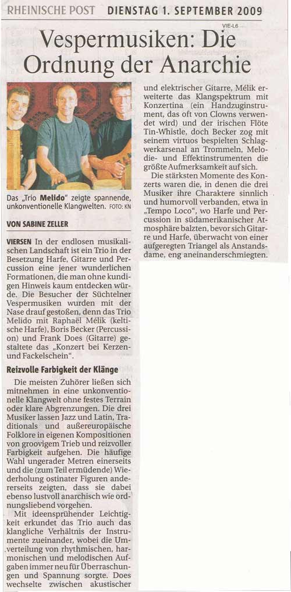

The innovative trio with German guitar player Frank Does, French harp player Raphaël Pinel and percussionist Boris Becker based in Düsseldorf has been playing since 2003 and explores new ways in the sound realms between guitar and harp. Boris Becker gives the string instrument lots of air for breathing through his earthy and filigrane precise work. Latin and Jazz are the home of the modern compositions of the trio.
Trio Melido loves to travel to the folklore of middle Eastern countries with their odd rhythms. They take us to the world of soul pop songs, using distorted electricc guitar sounds and play a completely free improvisation, to surprise themselves and the public.
Listen to our album : "Pontan"
In 2018 we celebrate the 10th anniversary of our album Pontan. It is with great pleasure and emotions that we offer you to listen to our tracks here. If you like to support us and want order the real CD album with the booklet, please send us an Email. Price is 15 Euro + shipping (2 Euro for Germany, 5 Euro for the rest of the world
Videos
Anapurna - Trio Melido - Live at Villa Erckens 4. July 2010 - composition by Frank Does, guitar
Malinka - 5/8 - Trio Melido - Live at Villa Erckens 4. July 2010 - Komposition by Raphael Pinel, harp
Tempo Loco - Trio Melido - Live at Villa Erckens 4. July 2010 - composition by Raphael Pinel, harp
Ladies' Pantalettes - Irish Traditional - Jazzy Arrangement by Trio Melido with Raphael Pinel on the Irish concertina
Cirrus 7 - Trio Melido - Live at Villa Erckens 4. July 2010 - a composition in 7/4 by Frank Does, guitar
Cascabel - Live in Magedburg on TV - Regiostar, Television Awards of the German Private Television - 29th March 2008 - composition by Frank Does
Pontan - Live in Magedburg on TV - Regiostar, Television Awards of the German Private Television - 29th March 2008 - composition by Raphael Pinel
Gaida - Live in Magedburg on TV - Regiostar, Television Awards of the German Private Television - 29th March 2008 - composition by Raphael Pinel
Lake Foxen - Live in Magedburg on TV - Regiostar, Television Awards of the German Private Television - 29th March 2008 - composition by Frank Does
Pontan - Live in Magedburg on TV - Regiostar, Television Awards of the German Private Television - 29th March 2008 - composition by Raphael Pinel
TRIO MELIDO makes its own original sound with inspiring improvisations, exciting virtuosity and rhythmic groove. The fire-like sound of the harp, clarity of the guitar and the colorful landscapes of the percussion create the unique rich sound of the trio.
This colorful abundance is shown also in the trio's own compositions and free improvisations. With rhythmic and melodic influences from East and West and arrangements of traditional songs, Trio Melido likes to mix world cultures. The individuality of the soloists, the aliveness of their common playing and their spontaneity give to all their concerts a special touch.
Frank Does, guitars, composition
photos: Marinel Brincau
Frank Does is influenced by classical guitar as well as fusion jazz and rock electric guitar. He uses the nylon-strung concert guitar with classical sound and technique which produces an interactive canvas with the harp strings. But by using distorted electric guitar sounds he also expands the sound spectrum of the trio. His compositions mirror his love to different music styles. His virtuosity and variety of sounds shape the trio's sound scape.
Raphaël Pinel, Celtic and chromatic harp, vocals, concertina, tin-whistle, composition
Among this uncommon harp player's special skills are the ability to create polyrhytmic layers between the left and right hand on asymmetric beats. Raphaël Pinel is one of the few harp players who masters improvisation in all tonalities which is on the celtic harp a challenge due to the instrument's limitation. Moreover he plays the new developed cross-strung chromatic harp with 2 strings rows in whole tones. His play touches the public with softness, humor or bring them to ecstatic high flights. As a multi-instruments-player, he grapes from times to times to his concertina or Irish flute. His singing in French or English gives a special flair to his own compositions.
Harpyromane (1998)
Résolution (2003-2009)
Silent Breeze (harp and violoncello, 2010)
Zen Moments
Wild Spirits - Dance Your Heart
Nomadic Love
Source of Joy
NEEMA (2017)
Boris Becker: percussions and drums, vocals, composition
As well as mastering the typical hand percussions like congas and bongos and everything that "dingles" like bells, cymbals and chimes, Boris Becker uses his feet with bass-drum, hi-hat and foot-bell. With the great variety of his instruments he has developed his own style. His playful lightness creates wideness and openness. At the same time he gives rhythmic impulses, builds up tension, extends melodies and contrasts the harmonic lines. An excellent time keeper, he plays with great sensitivity and complements the string instruments in an interesting and creative way. He enriches some pieces with his voice as well.
Book publication:
Wirkung und Wahrnehmung von Trommeln (Effects and Awareness of Drums).
Press
Rheinische Post, September 2009

Ruhr Nachrichten Lünen, Tues 28 February 2006
MELIDO's magic musical moments
Lünen - Die Harfe ist eher für verträumte, fließende Melodien und Akkorde und Soundteppiche bekannt.
Dass man auf einer Keltischen Harfe auch einen richtigen Blues zupfen kann, davon überzeugten sich am Freitag die über 70 Besucher der Blauen Stunde im Jazzclub am Stadthotel. Das Trio Melido war zu Gast. Der Franzose Raphaël Pinel spielt diese Harfe - und eben diesen Blues.
Melido bot den Zuhörern aber viel mehr als eben diesen Blues. Die Eigenkomposition - eine kleine Weltreise, was die Orte der Entstehung angeht - entziehen sich einer Einordnung in bestimmte Stile. Latin, Jazz, Weltmusik, Pop - die Mischung ergibt einen sehr eigenständigen Stil. In Harmonien schwelgend, feine Melodielinien mit viel Platz für Improvisationen. Richtig zuckersüß und damit in Gefahr, langweilig zu werden, wird es aber nie. Dafür sorgen vor allem auch die "krummen" Takte. 9/8, 7/4, da gelingt das Mitschnippen nicht immer.
Bravourös hält Percussionist Boris Becker das Trio rhythmisch in der Spur, setzt Orientierungspunkte für die solistischen Ausflüge Meliks und des Gitarristen Frank Does, die bis vor kurzem noch als Duo unterwegs waren. Becker ist ein Gewinn.
Wenn die Zuhörer mucksmäuschen still sind und eben nur zuhören, dann liegt das an den Kompositionen Melidos, deren Zauber man sich nicht entziehen kann.
Dieter Hirsch
WZ Krefeld 16.02.2004 "Klapperschlange hat Jazz im Blut"
Harfe-Gitarre-Duo "MELIDO" feierte Debüt
Mit ruhigen, lebhaften, rhythmischen und melodischen Jazzliedern feierte am Samstag das Duo MELIDO sein Debüt. Frank Does, Gitarre, und Raphael Mélik an der keltischen Harfe präsentierten in "Meuters's Musikwelt" in Schiefbahn ihre eigenen Kompositionen. Jazz mit Einflüssen aus den verschiedensten Ländern und Richtungen fand sich in den Stücken wieder. So trug beispielsweise das lebhaft und beruhigend zugleich wirkende Stück "Tempo Loco" brasilianische Einflüsse, während es in "Gaida" eher orientalisch zuging. Doch nicht nur die Saiten von Gitarre und Harfe kamen zum Einsatz. In dem Lied "Yes I Know" wurde auch gesungen.
Seit einem Jahr spielen die beiden Musiker nun schon in der besonderen Konstellation zusammen. "Wir arbeiten zunächst die Harmonien aus", erzählt Frank Does, "und werden dann wahrscheinlich ein Duo mit Quartett-Ambitionen. Das Publikum belohnte die Musiker mit Applaus und viele staunten offensichtlich immer wieder über die Fingerfertigkeit des Harfenisten." Da ist so ein Bass mit vier Saiten doch übersichtlicher", flüsterte ein Zuhörer augenzwinkernd. Souverän wechselten sich die Instrumente in Melodiestimme und Begleitung ab. Dies geschah fließend. Doch nicht so im letzten Stück "Cascabel" und das hatte auch seinen guten Grund. Denn: Die Klapperschlange - so die deutsche Übersetzung des Liedes - war in der Musik des Duos wiederzuerkennen. Die musikalische Umsetzeung der Spannung, des Angriffs und des ruhigen Wegschlängelns wurde mit Beifall des Publikums bedacht.
Frank Does und Raphaël Mélik - ein Duo, dessen Werdegang man im Blick behalten sollte und dessen Musik sicher noch so manchen Liebhaber finden wird.